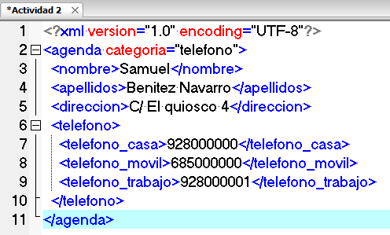

Ejercicio 2: Crea un documento XML bien formado que permita estructurar la información de una agenda de teléfonos. Supón que la información que podemos tener de una persona es su nombre y apellidos, su dirección y sus teléfonos, que pueden ser el teléfono de casa, el móvil y el teléfono del trabajo.
